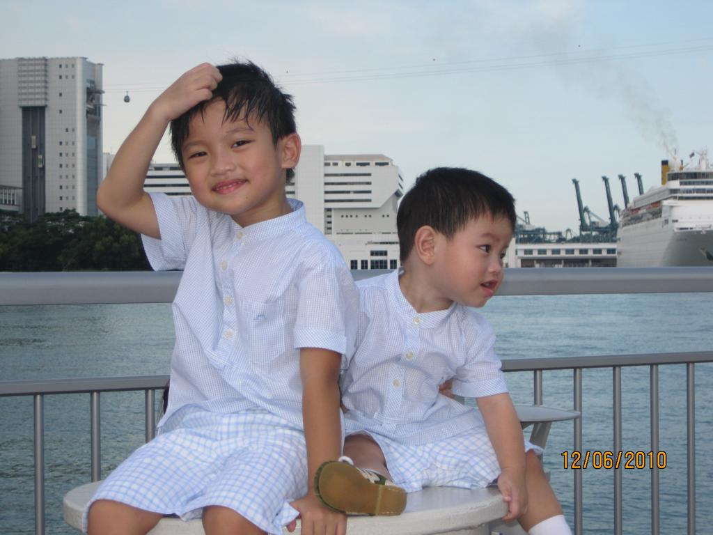
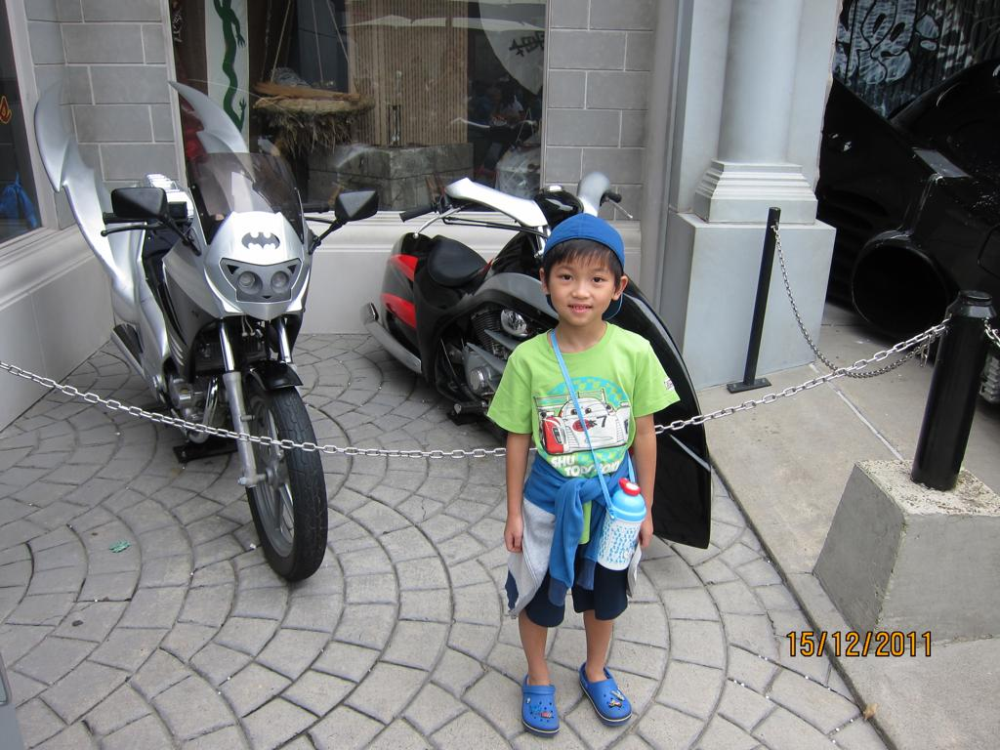
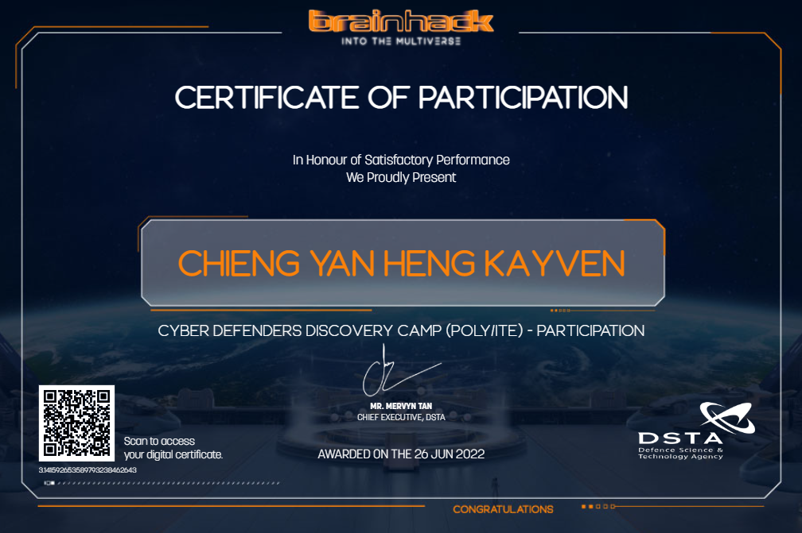

“
Education is the kindling of a flame, not the filling of a vessel. ”
Socrates
Lifelong learning is a form of self-initiated education that is focused on personal development,
best described as being voluntary with the purpose of achieving personal fulfillment.
Learning can also improve our quality of life, give us more and better possibilities,
and deepen our awareness of the world we live in.
My Education Journey
My educational path started when I was 5 that started in kindergarten at Pat's School House to build my fundamentals in my native language,
improve my gross motor skills and as well as explore basic concepts like math, writing and shapes.
Just my brother and I hanging out together.

Enjoying my holiday at Europe.
Wearing a suit for an event.
This marks the beginning of my primary education at Ai Tong school,
where I will be spending the next 6 years studying to prepare for the PSLE(Primary School Leaving
Examination) at the end of Primary 6.
The school also puts time aside to allow us students to cultivate good habits and values such as
sincerity and sportsmanship.
My first day at school eating chicken rice.
Another picture of me eating.
Showing my patriotism towards my country.
Moving on, I studied for another 4 years at
Maris Stella high school. Here, I learnt new and interesting
subjects such as Geography, Chemistry, Biology, Additional Mathematics and even Excercise and Sports
Science. Also, I have met some of the best people ever over there and had the best time of my life
during that period.
Hanging out with my friends
During the holidays, I did some side projects including this using p5
webeditor(html,sketch,css and javascript).
This is the prototype of the Snake Game I have created. The code for
the game is displayed on the left which can be viewed upon clicking on the link below while the game
is displayed on the right where the white worm represents the snake and the red square an apple.
I had fun coding this game and will continue to explore to learn how to code other games and expand my
knowledge and experience in coding.
Click here to try out the game!(Ensure port
5500 is open at vscode(snake.html) to run game)
I participated in an online hackathon conducted for a course of over 2 months of both online lectures
and tutorials and the actual CTF(Capture The Flag) tournament despite
it was online :(
but yet the cybercamp was an overall interesting experience.

My certificate proof of participation
How time flies! Now I am a current Singapore Polytechnic student
studying Information Technology and is aiming to pursue my studies in Computer Science in the future.